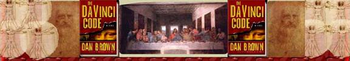
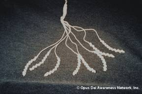
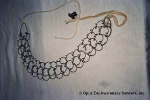
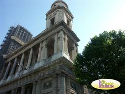
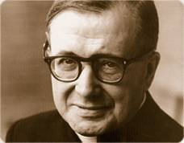

Jeff Murphy

Chapter 2
Jeff Murphy
Rue La Bruyère
Numeraries
Spartan
Grand Master
clef de voûte / keystone
absolution
The Way
The Discipline
Cilice
sénéchaux
Eglise de Saint-Sulpice
Father Josemaria Escriva
corporal mortification
Castigo corpus meum
Silas Named after Saint Silas who was an early Christian prophet and missionary. He traveled and preached with Apostle St. Paul. Silas and Paul were beaten and imprisoned for healing a slave “possessed by a spirit of divination.” They were released and Silas died in A.D. 50. "Silas, Saint." Encyclopædia Britannica. 2004. Encyclopædia Britannica Online. 29 Nov. 2004 <http://search.eb.com/eb/article?tocId=9067744>.
Rue La Bruyère - Street located in the heart of Paris’ 9th district, that of the theatres and the “grands boulevards” (i.e. boulevard Haussmann with its famous department stores: Galeries Lafayette, Printemps). http://www.hostelz.com/display.php/30695+Hotel+La+Bruyere, 9/19/04
Numeraries “R.C. Church. A member of the highest of the three lay ranks of the Opus Dei prelature; (with the) these members collectively (with pl. concord).”
Oxford English Dictionary Online © Oxford University Press 2004
Spartan “Characteristic or typical of Sparta, its inhabitants, or their customs; esp. distinguished by simplicity, frugality, courage, or brevity of speech.”
Oxford English Dictionary Online © Oxford University Press 2004
Grand Master “a. The head of one of the military orders of knighthood, e.g. the Hospitallers, Templars, etc. b. The head of the order of Freemasons (or of a ‘province’ of this), or of later societies which imitate its constitution, as the Odd Fellows, etc.”
Oxford English Dictionary Online © Oxford University Press 2004
clef de voûte / keystone – “according to lore, the brotherhood had created a map of stone-a clef de voute...or keystone- an engraved tablet that revealed the final resting place of the brotherhood's greatest secret,” (Brown, 13)
penance “An act of self-mortification or devotion performed voluntarily to show sorrow for a sin or other wrongdoing.” The American Heritage Dictionary of the English Language, Fourth Edition. Houghton Mifflin Company. 2000.
absolution “a. The act of absolving or the state of being absolved. b. The formal remission of sin imparted by a priest, as in the sacrament of penance.”
The American Heritage Dictionary of the English Language, Fourth Edition.
Houghton Mifflin Company. 2000.
The Way A book written by Father Josemaria Escriva in 1934. “Blessed be pain. Loved be pain. Sanctified be pain. . . Glorified be pain!” (The Way, 208)
See chapter 46 annotation for The Way
Opus Dei Awareness Network. www.odan.org. 9/20/2004. (Readers should be aware that The Opus Dei Awareness Network and its website are not the official site of Opus Dei (www.opusdei.org) and offer a critical view of that organization.
The Discipline “Cord-like whip which resembles macrame, used on the buttocks or back once a week. Opus Dei members must ask permission to use it more often, which many do. The story is often told in Opus Dei that the Founder was so zealous in using the discipline, he splattered the bathroom walls with streaks of blood.”

www.odan.org. 9/20/04
Cilice “A spiked chain worn around the upper thigh for two hours each day, except for Church feast days, Sundays, and certain times of the year. This is perhaps the most shocking of the corporal mortifications, and generally Opus Dei members are extremely hesitant to admit that they use it. It is a painful mortification which leaves small prick holes in the flesh, and makes the Opus Dei members tentative about wearing swim suits wherever non-Opus Dei members may be.”

www.odan.org. 9/20/04
sénéchaux See Prologue.
brotherhood “a. The state or relationship of being brothers. b. Fellowship. c. An association of men, such as a fraternity or union, united for common purposes. d. All the members of a profession or trade.” The American Heritage Dictionary of the English Language, Fourth Edition. Houghton Mifflin Company. 2000.
Eglise de Saint-Sulpice – a famous church in Paris. Jean-Jacques Olier began construction in 1646. It took 135 years to complete construction because of money problems. Place Saint-Sulpice is the square surrounding the Church of Saint-Sulpice.
To see a webcam view of Place Saint-Sulpice, follow this link:
http://www.parispourvous.net/index.php?wpe=a37
Visit http://news.bbc.co.uk/2/hi/programmes/from_our_own_correspondent/4065895.stm for a news article relating l’Eglise de Saint-Sulpice and The Da Vinci Code.
See also annotations for Chapters 5 and 15 on Eglise de Saint-Sulpice

Depth and Details – A Reader’s Guide to Dan Brown’s The Da Vinci Code. http://books.lulu.com/items/15000/15090/preview/depth_details_preview1.pdf 9/19/04
Eglise Saint-Sulpice http://membres.lycos.fr/sulpice/ 11/29/04
Father Josemaria Escriva – Born in Barbastro, Spain on January 9, 1902, he went on to found Opus Dei in 1930 and write The Way in 1934. Pope John Paul II canonized Josemaria Escriva on October 6, 2002.

www.josemariaescriva.info 11/29/04
corporal mortification “Discipline of the body and the appetites by self-denial or self-inflicted privation.” The American Heritage Dictionary of the English Language, Fourth Edition. Houghton Mifflin Company. 2000.
Castigo corpus meum To reprove one’s own body. In the New Testament, Paul writes castigo corpus meum in this sentence: “No, I beat my body and make it my slave so that after I have preached to others, I myself will not be disqualified for the prize.” (1COR 9:27) In this instance, castigo corpus meum translates to “I beat my body.”
Latin Dictionary and Grammar Aid. http://www.nd.edu/~archives/latgramm.htm 9/19/04.